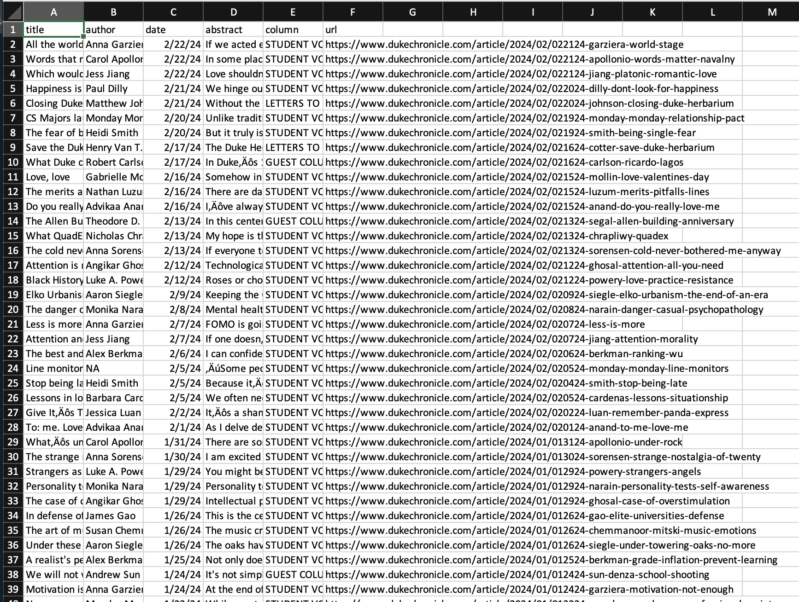
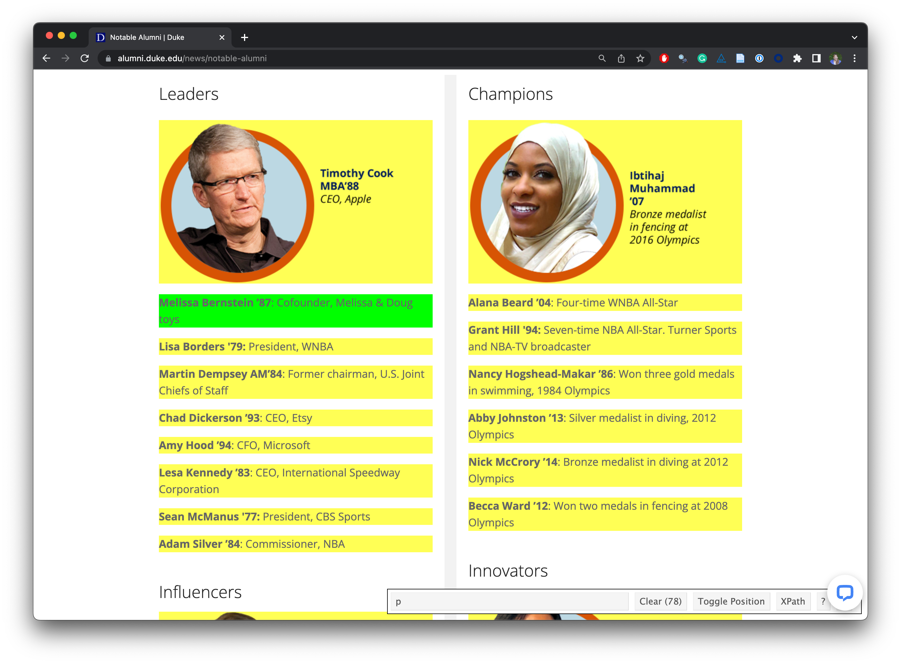

df <- tribble(
~club, ~membership_status,
1, "Select AI Competition Club's group. Select the group and click on the Join button at the bottom of the page to register for this group",
2, NA,
3, "Select Black Pre-Law Society at Duke's group. Select the group and click on the Join button at the bottom of the page to register for this group",
4, NA,
5, NA,
6, "Select Duke Women's Flag Football Team's group. Select the group and click on the Join button at the bottom of the page to register for this group",
7, NA,
8, NA,
9, NA,
10, "Select Latino Medical Student Association's group. Select the group and click on the Join button at the bottom of the page to register for this group",
11, NA,
12, "Select Native American/Indigenous Student Alliance's group. Select the group and click on the Join button at the bottom of the page to register for this group",
13, NA,
14, NA,
15, NA,
16, NA,
17, NA,
18, NA,
19, "Select Society of Women Engineers's group. Select the group and click on the Join button at the bottom of the page to register for this group",
20, NA,
21, NA
)
dfWeb scraping wrap-up + Chat GPT
Lecture 12
Dr. Mine Çetinkaya-Rundel
Duke University
STA 199 - Spring 2024
2024-02-27
Warm up
While you wait for class to begin…
- Open your
lab-4project, save and commit any pending changes, and push them to GitHub - Any questions from prepare materials?
Announcements
- Fill out TEAMMATES survey to provide feedback to your teammates (and to let us know how things are going)
- Fill out the (optional) midterm course evaluation
- A note on AE scores – they will continue to be updated!
- Yet another survey: The Campus Culture Survey – UG participation is very low, help lift it up!
Lab 4 update
Pull changes, see that Question 1 in lab-4.qmd is updated with the following code chunk:
Render lab-4.qmd and commit and push your changes.
From last time – Application exercise
Goal
- Scrape data and organize it in a tidy format in R
- Perform light text parsing to clean data
- Summarize and visualize the data

ae-09
- Go to the project navigator in RStudio (top right corner of your RStudio window) and open the project called ae.
- If there are any uncommitted files, commit them, and then click Pull.
- Open the file called
chronicle-scrape.Rand follow along.
Recap
- Use the SelectorGadget identify tags for elements you want to grab
- Use rvest to first read the whole page (into R) and then parse the object you’ve read in to the elements you’re interested in
- Put the components together in a data frame (a tibble) and analyze it like you analyze any other data
A new R workflow
When working in a Quarto document, your analysis is re-run each time you knit
If web scraping in a Quarto document, you’d be re-scraping the data each time you knit, which is undesirable (and not nice)!
An alternative workflow:
- Use an R script to save your code
- Saving interim data scraped using the code in the script as CSV or RDS files
- Use the saved data in your analysis in your Quarto document
Web scraping considerations
Ethics: “Can you?” vs “Should you?”

“Can you?” vs “Should you?”

Challenges: Unreliable formatting

Challenges: Data broken into many pages

Workflow: Screen scraping vs. APIs
Two different scenarios for web scraping:
Screen scraping: extract data from source code of website, with html parser (easy) or regular expression matching (less easy)
Web APIs (application programming interface): website offers a set of structured http requests that return JSON or XML files
Workflow: Scraping from many pages
So far you’ve learned to scrape data from a single page
If you wanted to scrape data from multiple, similarly structured web pages (e.g., scrape the text and other metadata for each opinion article on The Chronicle):
Write the code to scrape one page
Turn it into a function that takes the webpage URL as an argument and returns the scraped, structured data
Map the function over the list of URLs of interest
The 🐘 in the room: Chat GPT
Using Chat GPT
How are you using Chat GPT for this class?
Example 1 - From Lab 4
Another variable that needs some cleaning up is membership_status. Currently it should either be NA or contain some text that says "Select ... to register for this group". Recode this variable to say "Closed" if the current value is NA or "Open" otherwise. Save the resulting dataset with these two new variables as clubs, i.e., overwrite the data frame.
Then, display the first 10 rows of the dataset, relocate()ing membership_status to the beginning of the dataset to make sure it appears in the output in your rendered document.
Sample data
Sample data
# A tibble: 21 × 2
club membership_status
<dbl> <chr>
1 1 Select AI Competition Club's group. Select the group and click on the Join butto…
2 2 <NA>
3 3 Select Black Pre-Law Society at Duke's group. Select the group and click on the …
4 4 <NA>
5 5 <NA>
6 6 Select Duke Women's Flag Football Team's group. Select the group and click on th…
7 7 <NA>
8 8 <NA>
9 9 <NA>
10 10 Select Latino Medical Student Association's group. Select the group and click on…
# ℹ 11 more rowsChat GPT - Take 1 prompt
What is wrong with this promopt?
Another variable that needs some cleaning up is
membership_status. Currently it should either beNAor contain some text that says"Select ... to register for this group". Recode this variable to say"Closed"if the current value isNAor"Open"otherwise. Save the resulting dataset with these two new variables asclubs, i.e., overwrite the data frame.Then, display the first 10 rows of the dataset,
relocate()ingmembership_statusto the beginning of the dataset to make sure it appears in the output in your rendered document.
Chat GPT - Take 1 response
Explain what the following code does.
Certainly! To achieve this in R, you can follow these steps:
# Assuming your dataset is named 'clubs' # Recode membership_status variable clubs$membership_status <- ifelse(is.na(clubs$membership_status), "Closed", "Open") # Relocate membership_status to the beginning of the dataset clubs <- clubs[c("membership_status", setdiff(names(clubs), "membership_status"))] # Display the first 10 rows of the dataset head(clubs, 10)Make sure to replace ‘clubs’ with the actual name of your dataset. This code will recode the
membership_statusvariable as per your instructions, then move it to the beginning of the dataset and display the first 10 rows.
Chat GPT - Take 1 code
# Assuming your dataset is named 'clubs'
# Recode membership_status variable
clubs$membership_status <- ifelse(is.na(clubs$membership_status), "Closed", "Open")Error in eval(expr, envir, enclos): object 'clubs' not found# Relocate membership_status to the beginning of the dataset
clubs <- clubs[c("membership_status", setdiff(names(clubs), "membership_status"))]Error in eval(expr, envir, enclos): object 'clubs' not foundError in eval(expr, envir, enclos): object 'clubs' not foundChat GPT - Take 1 code + edit
clubs <- df
# Assuming your dataset is named 'clubs'
# Recode membership_status variable
clubs$membership_status <- ifelse(is.na(clubs$membership_status), "Closed", "Open")
# Relocate membership_status to the beginning of the dataset
clubs <- clubs[c("membership_status", setdiff(names(clubs), "membership_status"))]
# Display the first 10 rows of the dataset
head(clubs, 10)# A tibble: 10 × 2
membership_status club
<chr> <dbl>
1 Open 1
2 Closed 2
3 Open 3
4 Closed 4
5 Closed 5
6 Open 6
7 Closed 7
8 Closed 8
9 Closed 9
10 Open 10Chat GPT - Take 2 prompt
Can you suggest an alternate solution in R?
Chat GPT - Take 2 response
Explain what the following code does.
Certainly! An alternate solution can use the
mutateandrelocatefunctions from thedplyrpackage. Here’s an alternative code:library(dplyr) # Assuming your dataset is named 'clubs' clubs <- clubs %>% mutate(membership_status = ifelse(is.na(membership_status), "Closed", "Open")) %>% relocate(membership_status, .before = 1) # Display the first 10 rows of the dataset head(clubs, 10)This code achieves the same result but uses the
mutatefunction from thedplyrpackage for variable recoding and therelocatefunction to move themembership_statusvariable to the beginning of the dataset. Make sure to replace ‘clubs’ with the actual name of your dataset.
Chat GPT - Take 2 code
library(dplyr)
# Assuming your dataset is named 'clubs'
clubs <- clubs %>%
mutate(membership_status = ifelse(is.na(membership_status), "Closed", "Open")) %>%
relocate(membership_status, .before = 1)
# Display the first 10 rows of the dataset
head(clubs, 10)# A tibble: 10 × 2
membership_status club
<chr> <dbl>
1 Open 1
2 Closed 2
3 Open 3
4 Closed 4
5 Closed 5
6 Open 6
7 Closed 7
8 Closed 8
9 Closed 9
10 Open 10Chat GPT - Take 3 prompt
Can you suggest a tidyverse-based solution?
Chat GPT - Take 3 response
Certainly! If you want to stick to the tidyverse, you can use the
mutateandslice_headfunctions from thedplyrpackage along with theforcatspackage for factor manipulation. Here’s a tidyverse-based solution:library(dplyr) library(forcats) # Assuming your dataset is named 'clubs' clubs <- clubs %>% mutate(membership_status = fct_recode(membership_status, Closed = "NA", Open = "Select ... to register for this group")) %>% slice_head(n = 10) %>% relocate(membership_status, .before = 1) # Display the first 10 rows of the dataset clubsThis code uses
fct_recodefrom theforcatspackage to recode the levels of themembership_statusvariable. Theslice_headfunction is then used to select the first 10 rows, andrelocateis used to move themembership_statusvariable to the beginning of the dataset. Make sure to replace ‘clubs’ with the actual name of your dataset.
Chat GPT - Take 3 code
library(dplyr)
library(forcats)
# Assuming your dataset is named 'clubs'
clubs <- clubs %>%
mutate(membership_status = fct_recode(membership_status, Closed = "NA", Open = "Select ... to register for this group")) %>%
slice_head(n = 10) %>%
relocate(membership_status, .before = 1)
# Display the first 10 rows of the dataset
clubs# A tibble: 10 × 2
membership_status club
<fct> <dbl>
1 Select AI Competition Club's group. Select the group and click on the Join butto… 1
2 <NA> 2
3 Select Black Pre-Law Society at Duke's group. Select the group and click on the … 3
4 <NA> 4
5 <NA> 5
6 Select Duke Women's Flag Football Team's group. Select the group and click on th… 6
7 <NA> 7
8 <NA> 8
9 <NA> 9
10 Select Latino Medical Student Association's group. Select the group and click on… 10Chat GPT - Take 4 prompt
The text “Select … to register for this group” can vary for each group. For example, it can be ““Select blah blah to register for this group” or it can be “Select la di da to register for this group”. Can you suggest a tidyverse-based solution that would capture all of possible options for the … in this text?
Chat GPT - Take 4 response
Explain what the following code does.
Certainly! If the text “Select … to register for this group” varies for each group, you can use the
str_detectfunction from thestringrpackage to identify those cases. Here’s a tidyverse-based solution:library(dplyr) library(stringr) # Assuming your dataset is named 'clubs' clubs <- clubs %>% mutate(membership_status = ifelse(str_detect(membership_status, "Select .* to register for this group"), "Open", "Closed")) %>% relocate(membership_status, .before = 1) # Display the first 10 rows of the dataset head(clubs, 10)This code uses
str_detectto check if themembership_statuscontains the pattern “Select … to register for this group”. If it does, it sets the status to “Open”; otherwise, it sets it to “Closed”. Make sure to replace ‘clubs’ with the actual name of your dataset.
Chat GPT - Take 4 code
library(dplyr)
library(stringr)
# Assuming your dataset is named 'clubs'
clubs <- clubs %>%
mutate(membership_status = ifelse(str_detect(membership_status, "Select .* to register for this group"), "Open", "Closed")) %>%
relocate(membership_status, .before = 1)
# Display the first 10 rows of the dataset
head(clubs, 10)# A tibble: 10 × 2
membership_status club
<chr> <dbl>
1 Open 1
2 <NA> 2
3 Open 3
4 <NA> 4
5 <NA> 5
6 Open 6
7 <NA> 7
8 <NA> 8
9 <NA> 9
10 Open 10Chat GPT - Take 5 prompt
What is different about this prompt?
Let’s try again. Can you write a tidyverse-based solution where membership status is recoded as Closed if the current value is NA and Open if the current value is anything else. Then, using the relocate() function, the membership status is moved to be the first column in the output.
Chat GPT - Take 5 response
Explain what the following code does.
Certainly! My apologies for the confusion. Here’s a tidyverse-based solution that recodes the membership status and moves it to be the first column using the
dplyrpackage:library(dplyr) # Assuming your dataset is named 'clubs' clubs <- clubs %>% mutate(membership_status = if_else(is.na(membership_status), "Closed", "Open")) %>% relocate(membership_status, .before = 1) # Display the first 10 rows of the dataset head(clubs, 10)This code uses the
mutatefunction to recodemembership_statusas “Closed” if it’s NA and “Open” otherwise. Then, therelocatefunction is used to movemembership_statusto be the first column in the dataset. Make sure to replace ‘clubs’ with the actual name of your dataset.
Chat GPT - Take 5 code
library(dplyr)
# Assuming your dataset is named 'clubs'
clubs <- clubs %>%
mutate(membership_status = if_else(is.na(membership_status), "Closed", "Open")) %>%
relocate(membership_status, .before = 1)
# Display the first 10 rows of the dataset
head(clubs, 10)# A tibble: 10 × 2
membership_status club
<chr> <dbl>
1 Open 1
2 Closed 2
3 Open 3
4 Closed 4
5 Closed 5
6 Open 6
7 Closed 7
8 Closed 8
9 Closed 9
10 Open 10Chat GPT - Take 5 code + edit
Chat GPT - Take 5 code + edit
Chat GPT - Take 5 code + edit
clubs <- clubs |>
mutate(membership_status = if_else(is.na(membership_status), "Closed", "Open")) |>
relocate(membership_status)
clubs# A tibble: 21 × 2
membership_status club
<chr> <dbl>
1 Open 1
2 Closed 2
3 Open 3
4 Closed 4
5 Closed 5
6 Open 6
7 Closed 7
8 Closed 8
9 Closed 9
10 Open 10
# ℹ 11 more rowsExample 2
Each CSI franchise includes a number of series, each with the character string "CSI" (in capital letters) in their title. Using this information, create a new data frame called csi that only has titles from the CSI-verse and all of the columns from tv for these titles. Then, display the first 10 rows of csi. Note: The titles and seasons included in the dataset may not be all CSI titles and titles that have ever aired.
Chat GPT - Take 1 prompt
Each CSI franchise includes a number of series, each with the character string
"CSI"(in capital letters) in their title. Using this information, create a new data frame calledcsithat only has titles from the CSI-verse and all of the columns fromtvfor these titles. Then, display the first 10 rows ofcsi. Note: The titles and seasons included in the dataset may not be all CSI titles and titles that have ever aired.
Chat GPT - Take 1 response
Certainly! To filter the
tvdata frame to include only titles from the CSI-verse, you can use thefilterfunction from thedplyrpackage. Here’s the code:library(dplyr) # Assuming your dataset is named 'tv' csi <- tv %>% filter(str_detect(title, "CSI", case_insensitive = TRUE)) # Display the first 10 rows of the 'csi' data frame head(csi, 10)This code uses the
filterfunction to select rows where thetitlecolumn contains the string “CSI” (case-insensitive). The resulting data frame,csi, will include only titles from the CSI-verse along with all the columns from the originaltvdata frame. Make sure to replace ‘tv’ with the actual name of your dataset.
Chat GPT - Take 1 code
What is wrong with the following code?
library(dplyr)
# Assuming your dataset is named 'tv'
csi <- tv %>%
filter(str_detect(title, "CSI", case_insensitive = TRUE))Error in `filter()`:
ℹ In argument: `str_detect(title, "CSI", case_insensitive = TRUE)`.
Caused by error in `str_detect()`:
! unused argument (case_insensitive = TRUE)Error in eval(expr, envir, enclos): object 'csi' not foundChat GPT - Take 2 prompt
str_detect doesn’t have a case_insensitive argument, can you try again?
Chat GPT - Take 2 response
You are correct, and I appreciate your understanding. The
str_detectfunction itself doesn’t have acase_insensitiveargument. Instead, you can use thestr_whichfunction along with thecase_insensitiveargument in thefilterfunction. Here’s the corrected code:library(dplyr) # Assuming your dataset is named 'tv' csi <- tv %>% filter(str_detect(title, "CSI", ignore_case = TRUE)) # Display the first 10 rows of the 'csi' data frame head(csi, 10)This code uses
str_detectwithin thefilterfunction and includes theignore_case = TRUEargument to perform a case-insensitive search. The resultingcsidata frame will contain only titles from the CSI-verse along with all the columns from the originaltvdata frame. Make sure to replace ‘tv’ with the actual name of your dataset.
Chat GPT - Take 2 code
library(dplyr)
# Assuming your dataset is named 'tv'
csi <- tv %>%
filter(str_detect(title, "CSI", ignore_case = TRUE))Error in `filter()`:
ℹ In argument: `str_detect(title, "CSI", ignore_case = TRUE)`.
Caused by error in `str_detect()`:
! unused argument (ignore_case = TRUE)Error in eval(expr, envir, enclos): object 'csi' not foundChat GPT - Take 3 prompt
str_detect doesn’t have an ignore_case argument either, can you try again?
Chat GPT - Take 3 response
I apologize for the oversight. It seems there was a mistake in my responses. To perform a case-insensitive search, you can use the
stringipackage along withstri_detect_regex. Here’s the corrected code:library(dplyr) library(stringi) # Assuming your dataset is named 'tv' csi <- tv %>% filter(stri_detect_regex(title, "CSI", case_insensitive = TRUE)) # Display the first 10 rows of the 'csi' data frame head(csi, 10)This code uses
stri_detect_regexfrom thestringipackage within thefilterfunction, and it includes thecase_insensitive = TRUEargument for a case-insensitive search. The resultingcsidata frame will contain only titles from the CSI-verse along with all the columns from the originaltvdata frame. Make sure to replace ‘tv’ with the actual name of your dataset.
Let’s go back to Take 1
and edit it a bit:
# A tibble: 36 × 9
season title year month day av_rating genre_1 genre_2 genre_3
<dbl> <chr> <dbl> <dbl> <dbl> <dbl> <chr> <chr> <chr>
1 1 CSI: Crime Scene Investigat… 2001 1 20 8.32 Crime Drama Mystery
2 2 CSI: Crime Scene Investigat… 2002 1 10 8.26 Crime Drama Mystery
3 3 CSI: Crime Scene Investigat… 2003 1 15 8.30 Crime Drama Mystery
4 4 CSI: Crime Scene Investigat… 2004 1 18 8.33 Crime Drama Mystery
5 5 CSI: Crime Scene Investigat… 2005 1 24 8.38 Crime Drama Mystery
6 6 CSI: Crime Scene Investigat… 2006 1 16 8.21 Crime Drama Mystery
7 7 CSI: Crime Scene Investigat… 2007 1 14 8.43 Crime Drama Mystery
8 8 CSI: Crime Scene Investigat… 2008 1 7 8.07 Crime Drama Mystery
9 9 CSI: Crime Scene Investigat… 2009 1 27 7.80 Crime Drama Mystery
10 10 CSI: Crime Scene Investigat… 2010 1 23 7.69 Crime Drama Mystery
# ℹ 26 more rowsLet’s go back to Take 1
# A tibble: 36 × 9
season title year month day av_rating genre_1 genre_2 genre_3
<dbl> <chr> <dbl> <dbl> <dbl> <dbl> <chr> <chr> <chr>
1 1 CSI: Crime Scene Investigat… 2001 1 20 8.32 Crime Drama Mystery
2 2 CSI: Crime Scene Investigat… 2002 1 10 8.26 Crime Drama Mystery
3 3 CSI: Crime Scene Investigat… 2003 1 15 8.30 Crime Drama Mystery
4 4 CSI: Crime Scene Investigat… 2004 1 18 8.33 Crime Drama Mystery
5 5 CSI: Crime Scene Investigat… 2005 1 24 8.38 Crime Drama Mystery
6 6 CSI: Crime Scene Investigat… 2006 1 16 8.21 Crime Drama Mystery
7 7 CSI: Crime Scene Investigat… 2007 1 14 8.43 Crime Drama Mystery
8 8 CSI: Crime Scene Investigat… 2008 1 7 8.07 Crime Drama Mystery
9 9 CSI: Crime Scene Investigat… 2009 1 27 7.80 Crime Drama Mystery
10 10 CSI: Crime Scene Investigat… 2010 1 23 7.69 Crime Drama Mystery
# ℹ 26 more rowsGuidelines and best practices for using Chat GPT
- Do not just copy-paste the prompt – for appropriate academic conduct, for your own learning, and for getting to better results faster
- Engineer the prompt until the response starts to look like code you’re learning in the course
- If the response is not correct, ask for a correction
- If the response doesn’t follow the guidelines, ask for a correction
- Do not just copy-paste code from Chat GPT responses, run it line-by-line and edit as needed
- Watch out for clear mistakes in the response: do not keep loading packages that are already loaded, use the base pipe
|>, use tidyverse-based code, etc.